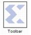

|
|
The Xilinx Toolbar block provides quick access to several useful utilities in System Generator. The Toolbar simplifies the use of the zoom feature in Simulink and adds new auto layout and route capabilities to Simulink models.